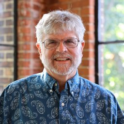
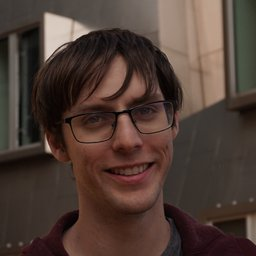

<title>Programming Cognitive Agents with RMPL</title>
<meta name="claude:viewport-fit-sides" content="cover">
<meta name="description" content="AAAI-27 lab: programming with flexible time, self-monitoring and choice in RMPL, executed by the Janeway executive.">
<link rel="preconnect" href="https://fonts.googleapis.com">
<link rel="preconnect" href="https://fonts.gstatic.com" crossorigin>
<link rel="stylesheet" href="https://fonts.googleapis.com/css2?family=IBM+Plex+Mono:wght@400;500&family=IBM+Plex+Sans+Condensed:wght@500;600;700&family=Source+Serif+4:ital,opsz,wght@0,8..60,400;0,8..60,600;1,8..60,400&display=swap">
<style>
/* Layout: a top bar and a two-column masthead at full width, then one centred reading column.
   Everything inside the column spans it, so the column width is the line length. */
:root {
  --paper: #f4f7f6;
  --surface: #ffffff;
  --ink: #16212a;
  --muted: #57646e;
  --rule: #d6dedc;
  --accent: #0d6579;
  --accent-ink: #ffffff;
  --accent-soft: #e0eef1;
  --code-bg: #ebf0ef;
  --flex: #a85a14;
  --ok: #2a7a3f;

  --font-display: "IBM Plex Sans Condensed", "Arial Narrow", "Helvetica Neue", Arial, sans-serif;
  --font-body: "Source Serif 4", Georgia, "Times New Roman", serif;
  --font-mono: "IBM Plex Mono", ui-monospace, SFMono-Regular, Menlo, Consolas, monospace;

  --step--1: 0.875rem;
  --step-0: 1.0625rem;
  --step-1: 1.25rem;
  --step-2: 1.6rem;
  --step-3: clamp(2rem, 1.4rem + 2.6vw, 3.1rem);
}
@media (prefers-color-scheme: dark) {
  :root:not([data-theme="light"]) {
    --paper: #0e1418; --surface: #141c21; --ink: #e1e8ea; --muted: #93a1a9; --rule: #29343b;
    --accent: #5fc0d5; --accent-ink: #0e1418; --accent-soft: #16303a; --code-bg: #18232a;
    --flex: #e3a462; --ok: #6cc584; color-scheme: dark;
  }
}
:root[data-theme="dark"] {
  --paper: #0e1418; --surface: #141c21; --ink: #e1e8ea; --muted: #93a1a9; --rule: #29343b;
  --accent: #5fc0d5; --accent-ink: #0e1418; --accent-soft: #16303a; --code-bg: #18232a;
  --flex: #e3a462; --ok: #6cc584; color-scheme: dark;
}

* { box-sizing: border-box; }
html { scroll-behavior: smooth; scroll-padding-top: 1.5rem; }
@media (prefers-reduced-motion: reduce) { html { scroll-behavior: auto; } }
body {
  background: var(--paper);
  color: var(--ink);
  font-family: var(--font-body);
  font-size: var(--step-0);
  line-height: 1.6;
  padding-left: max(16px, env(safe-area-inset-left, 0px));
  padding-right: max(16px, env(safe-area-inset-right, 0px));
}
a { color: var(--accent); text-underline-offset: 0.18em; }
a:focus-visible, button:focus-visible { outline: 2px solid var(--accent); outline-offset: 3px; border-radius: 2px; }

h1, h2, h3 { font-family: var(--font-display); line-height: 1.15; text-wrap: balance; margin: 0; }
h2 { font-size: var(--step-2); font-weight: 700; }
h3 { font-size: var(--step-1); font-weight: 600; margin-top: 2rem; }
p { margin: 0; }
code, pre, kbd { font-family: var(--font-mono); font-size: 0.86em; }
:not(pre) > code { background: var(--code-bg); padding: 0.08em 0.32em; border-radius: 3px; white-space: nowrap; }

.label {
  font-family: var(--font-display); font-weight: 600; font-size: var(--step--1);
  letter-spacing: 0.08em; text-transform: uppercase; color: var(--muted);
}
.tba {
  display: inline-block; font-family: var(--font-display); font-size: 0.8rem; font-weight: 600;
  letter-spacing: 0.06em; text-transform: uppercase; color: var(--flex);
  border: 1px solid currentColor; border-radius: 3px; padding: 0 0.4em; vertical-align: 0.1em;
}

/* ---------- Masthead ---------- */
.masthead { max-width: 1080px; margin: 0 auto; padding-block: 2.5rem 2.5rem; border-bottom: 1px solid var(--rule);
  display: grid; grid-template-columns: minmax(0, 1.15fr) minmax(0, 1fr); gap: 2.5rem; align-items: center; }
.masthead .intro { display: grid; gap: 1.1rem; min-width: 0; }
.masthead h1 { font-size: var(--step-3); font-weight: 700; letter-spacing: -0.01em; }
.masthead .lede { font-size: var(--step-1); line-height: 1.5; color: var(--ink); max-width: 36ch; }
.facts { display: grid; grid-template-columns: auto 1fr; gap: 0.3rem 1rem; font-size: var(--step--1); margin: 0; }
.facts dt { font-family: var(--font-display); font-weight: 600; color: var(--muted); letter-spacing: 0.04em; text-transform: uppercase; }
.facts dd { margin: 0; }
.actions { display: flex; flex-wrap: wrap; gap: 0.75rem; margin-top: 0.4rem; }
.btn { display: inline-block; font-family: var(--font-display); font-weight: 600; font-size: 1rem; letter-spacing: 0.02em;
  padding: 0.6rem 1.1rem; border-radius: 4px; text-decoration: none; border: 1.5px solid var(--accent); }
.btn.primary { background: var(--accent); color: var(--accent-ink); }
.btn.secondary { color: var(--accent); }
.btn:hover { filter: brightness(1.08); }

.specimen { min-width: 0; background: var(--surface); border: 1px solid var(--rule); border-radius: 6px; overflow: hidden; }
.specimen pre { margin: 0; padding: 1.1rem 1.2rem; overflow-x: auto; font-size: 0.9rem; line-height: 1.6; }
.specimen figcaption { border-top: 1px solid var(--rule); padding: 0.7rem 1.2rem; font-size: var(--step--1); color: var(--muted); }
.c { color: var(--muted); font-style: italic; }
.k { color: var(--accent); font-weight: 500; }
.b { color: var(--flex); font-weight: 500; }

/* ---------- Top bar ---------- */
.topnav { max-width: 1080px; margin: 0 auto; padding-block: 0.9rem; border-bottom: 1px solid var(--rule);
  display: flex; flex-wrap: wrap; justify-content: space-between; align-items: baseline; gap: 0.5rem 1.5rem; }
.topnav .home { font-family: var(--font-display); font-weight: 700; color: var(--ink); text-decoration: none; }
.topnav ol { list-style: none; margin: 0; padding: 0; display: flex; flex-wrap: wrap; gap: 0.3rem 1.25rem; }
.topnav ol a { font-family: var(--font-display); font-weight: 500; color: var(--muted); text-decoration: none; }
.topnav ol a:hover { color: var(--ink); }

/* ---------- Body ---------- */
main { max-width: 720px; margin: 0 auto; display: grid; gap: 3.5rem; padding-block: 2.5rem 4rem; }
section { display: grid; gap: 1.1rem; min-width: 0; }
.prose { display: grid; gap: 1rem; }
.prose ul { margin: 0; padding-left: 1.3rem; display: grid; gap: 0.45rem; }
.prose h3 { margin-top: 0.6rem; }
.section-head { display: grid; gap: 0.3rem; border-top: 3px solid var(--ink); padding-top: 0.9rem; }

.table-wrap { overflow-x: auto; border: 1px solid var(--rule); border-radius: 6px; background: var(--surface); }
table { border-collapse: collapse; width: 100%; font-size: 0.95rem; }
th, td { text-align: left; vertical-align: top; padding: 0.6rem 0.85rem; border-bottom: 1px solid var(--rule); }
tr:last-child td { border-bottom: 0; }
th { font-family: var(--font-display); font-weight: 600; font-size: var(--step--1); letter-spacing: 0.05em; text-transform: uppercase; color: var(--muted); background: var(--paper); }
td.num, th.num { font-variant-numeric: tabular-nums; white-space: nowrap; text-align: right; }

.soon { color: var(--muted); }
.note { font-size: var(--step--1); color: var(--muted); }

pre.block { margin: 0; background: var(--code-bg); border-radius: 6px; padding: 1rem 1.1rem; overflow-x: auto; line-height: 1.55; font-size: 0.88rem; }

.callout { background: var(--accent-soft); border-radius: 6px; padding: 1rem 1.2rem; display: grid; gap: 0.5rem; }
.callout .label { color: var(--accent); }

details { border: 1px solid var(--rule); border-radius: 6px; background: var(--surface); }
summary { cursor: pointer; padding: 0.75rem 1rem; font-family: var(--font-display); font-weight: 600; }
details > div { padding: 0 1rem 1rem; display: grid; gap: 0.7rem; min-width: 0; }
details ul { margin: 0; padding-left: 1.3rem; display: grid; gap: 0.6rem; }

/* organizers */
.people { display: grid; grid-template-columns: repeat(auto-fit, minmax(17rem, 1fr)); gap: 1.25rem; }
.person { background: var(--surface); border: 1px solid var(--rule); border-radius: 6px; padding: 1.2rem; display: grid; gap: 0.6rem; align-content: start; }
.person .who { display: grid; grid-template-columns: 4rem minmax(0, 1fr); gap: 0.9rem; align-items: center; }
.person .photo { width: 4rem; height: 4rem; border-radius: 50%; object-fit: cover; background: var(--accent-soft); color: var(--accent);
  display: grid; place-items: center; font-family: var(--font-display); font-weight: 700; font-size: 1.3rem; }
.person h3 { margin: 0; font-size: 1.15rem; }
.person .aff { font-size: var(--step--1); color: var(--muted); }
.person p { font-size: 0.97rem; }

.refs { margin: 0; padding-left: 1.3rem; display: grid; gap: 0.7rem; }
.refs li { padding-left: 0.2rem; }
.refs .why { display: block; color: var(--muted); font-size: var(--step--1); }

footer { max-width: 1080px; margin: 0 auto; border-top: 1px solid var(--rule); padding-block: 1.5rem 2.5rem;
  display: flex; flex-wrap: wrap; justify-content: space-between; gap: 1rem; font-size: var(--step--1); color: var(--muted); }

@media (max-width: 960px) {
  .masthead { grid-template-columns: minmax(0, 1fr); padding-block: 2rem 2rem; }
  main { gap: 3rem; padding-block: 1.5rem 3rem; }
}
@media (max-width: 520px) {
  .facts { grid-template-columns: minmax(0, 1fr); gap: 0 0; }
  .facts dd { margin-bottom: 0.45rem; }
}
</style>

<nav class="topnav" aria-label="Sections">
  <a class="home" href="#top">RMPL Lab &middot; AAAI-27</a>
  <ol>
    <li><a href="#about">About</a></li>
    <li><a href="#schedule">Schedule</a></li>
    <li><a href="#install">Before the lab</a></li>
    <li><a href="#organizers">Organizers</a></li>
    <li><a href="#resources">Resources</a></li>
  </ol>
</nav>

<header class="masthead" id="top">
  <div class="intro">
    <span class="label">AAAI-27 Lab &middot; Half day of lecture and hands-on practice</span>
    <h1>Programming Paradigms for Building Cognitive Agents</h1>
    <p class="lede">A hands-on lab in RMPL, the Reactive Model-based Programming Language. You write programs that state goals, tolerate uncertain timing and watch their own progress. An executive then plans, schedules and monitors them.</p>
    <dl class="facts">
      <dt>When</dt><dd>AAAI-27 Tutorial and Lab Forum, February 16&ndash;17, 2027. Session day, time and room <span class="tba">TBA</span></dd>
      <dt>Presenters</dt><dd>Jake Olkin and Brian Williams, Massachusetts Institute of Technology</dd>
      <dt>Bring</dt><dd>A laptop with Docker and the lab installed (<a href="#install">instructions</a>)</dd>
    </dl>
    <div class="actions">
      <a class="btn primary" href="#install">Install before you arrive</a>
      <a class="btn secondary" href="https://gitlab.com/mit-mers/enterprise/rmpl-lab-2026" target="_blank" rel="noopener">Lab repository</a>
    </div>
  </div>
  <figure class="specimen" style="margin:0">
<pre><span class="c">;; The world decides how long a trip takes,</span>
<span class="c">;; anywhere inside the bounds you declare.</span>
(<span class="k">defcp</span> go-to [r :Robot dest lo hi]
  <span class="k">:effects</span>  [(at-end (= r.location dest))]
  <span class="k">:duration</span> [lo hi <span class="b">:contingent</span>])

(<span class="k">defcp</span> main []
  (<span class="k">with-temporal-constraint</span> [0 50]   <span class="c">; deadline</span>
    (<span class="k">parallel</span>
      (<span class="k">sequence</span> :slack True
        (go-to alpha "site-north" 7 18)
        (sample alpha "site-north")
        (go-to alpha "rendezvous" 6 16)
        (initiate-communication alpha bravo))
      (<span class="k">sequence</span> :slack True
        (go-to bravo "site-east" 10 22)
        <span class="c">;; ...</span>
        (initiate-communication bravo alpha)))))</pre>
    <figcaption>Part of a program from the hands-on session. Before anything moves, the executive checks that every combination of trip times inside these bounds still meets the 50-second deadline.</figcaption>
  </figure>
</header>

<main>
  <!-- ================= ABOUT ================= -->
  <section id="about">
    <div class="section-head"><span class="label">Overview</span><h2>About the lab</h2></div>
    <div class="prose">
      <p>Robots and spacecraft have long been commanded with scripts: fixed sequences of commands that say what to do and when. Scripts are easy to write, but they record neither why each step is there nor how much its timing may vary, so the agent cannot adapt when an action runs long, and cannot tell when something has gone wrong.</p>
      <p>This lab introduces participants to the Reactive Model-based Programming Language (RMPL), and through it gives a tour of how several programming paradigms come together to make cognitive agents easier to design, while giving programmers richer ways to specify their behavior. We cover four. Goal-directed programs state what should become true, not how to make it true. Monitorable programs declare conditions and effects, which let the executive detect a failure the moment an assumption breaks. Temporally flexible programs bound uncertain durations and are scheduled online as events unfold. Non-deterministic programs offer alternatives and leave the choice to a planner. Each paradigm hands more of the work from the programmer to the executive, and each rests on algorithms participants will see at work: temporal networks with uncertainty, causal-link monitoring and Conflict-Directed A*.</p>
      <p>The lab is half lecture and half coding. The lecture introduces each paradigm and the reasoning behind it. In the hands-on session, participants program a two-robot mission in a Jupyter notebook, starting from a timed command script and adding one paradigm per stage, and watch the Janeway executive plan, schedule and monitor it on simulated robots. Programs are compiled by Tanagra, our RMPL compiler, and checked before they run, so an infeasible program is rejected with the specific constraints that conflict. Everything runs on participants' own laptops in Docker, with no ROS installation or robot hardware, and the same programs run unchanged on physical TurtleBot3 robots.</p>

      <h3>Is this lab for me?</h3>
      <p>If you are interested in building cognitive agents, this lab is for you. It suits planning and scheduling researchers who want to see their plans executed, and roboticists who want task-level autonomy without hand-coding sequencing, timeouts and failure checks. It also suits anyone building agents, embodied or driven by large language models, who wants a program representation that an executive can check, schedule and monitor. Participants leave with a working, MIT-licensed RMPL toolchain they can take back to their own research and teaching.</p>

      <h3>What background is required?</h3>
      <p>General familiarity with AI and with programming. No background in planning, temporal reasoning, ROS or Lisp is assumed.</p>
    </div>
  </section>

  <!-- ================= SCHEDULE ================= -->
  <section id="schedule">
    <div class="section-head"><span class="label">Start time TBA</span><h2>Schedule</h2></div>
    <div class="table-wrap">
      <table>
        <thead><tr><th>Session</th><th>Presenter</th><th class="num">Min</th><th>Materials</th></tr></thead>
        <tbody>
          <tr><td>Introduction</td><td>Brian Williams</td><td class="num">10</td><td><span class="soon">Slides</span></td></tr>
          <tr><td>Self-monitoring programs</td><td>Brian Williams</td><td class="num">25</td><td><span class="soon">Slides</span></td></tr>
          <tr><td>Programming with flexible time</td><td>Brian Williams</td><td class="num">25</td><td><span class="soon">Slides</span></td></tr>
          <tr><td>Programs with choices</td><td>Brian Williams</td><td class="num">30</td><td><span class="soon">Slides</span></td></tr>
          <tr><td><em>Break</em></td><td></td><td class="num">30</td><td></td></tr>
          <tr><td>Overview of the hands-on lab</td><td>Jake Olkin</td><td class="num">15</td><td><span class="soon">Slides</span></td></tr>
          <tr><td>Hands-on session: the five-stage mission</td><td>Jake Olkin, with Brian Williams</td><td class="num">90</td><td><a href="https://gitlab.com/mit-mers/enterprise/rmpl-lab-2026" target="_blank" rel="noopener">Notebook</a></td></tr>
          <tr><td>Wrap-up and discussion</td><td>Brian Williams and Jake Olkin</td><td class="num">15</td><td></td></tr>
        </tbody>
      </table>
    </div>
    <p class="note">Slides will be linked here after the lab. The notebook is in the lab repository.</p>
  </section>

  <!-- ================= INSTALL ================= -->
  <section id="install">
    <div class="section-head"><span class="label">Do this before the forum</span><h2>Before the lab</h2></div>
    <div class="callout">
      <span class="label">Please install in advance</span>
      <p>The first start downloads about 1&nbsp;GB, which is slow on conference Wi-Fi. After that the lab runs with no network at all. If you cannot install beforehand, we will have USB drives with the complete lab.</p>
    </div>
    <div class="prose">
      <p>You need a laptop running Windows, macOS or Linux, with git and <a href="https://www.docker.com/products/docker-desktop/" target="_blank" rel="noopener">Docker Desktop</a> (or Docker Engine with the compose plugin) installed. Docker needs about 6&nbsp;GB of free disk, and the laptop needs 8&nbsp;GB of RAM. Then:</p>
    </div>
<pre class="block">git clone https://gitlab.com/mit-mers/enterprise/rmpl-lab-2026.git
cd rmpl-lab-2026/lab
docker compose up</pre>
    <div class="prose">
      <p>When <code>docker compose ps</code> shows <code>janeway</code> as <strong>healthy</strong> (about 30 seconds), go to <code>http://localhost:8888/?token=rmpl</code>, open <code>RMPL_Lab.ipynb</code> and run the first cell. If it reports success, you are ready. Stop the lab with <kbd>Ctrl</kbd>+<kbd>C</kbd> and start it the same way on the day. On Windows, use PowerShell with Docker Desktop's WSL&nbsp;2 backend.</p>
    </div>
    <details>
      <summary>If something goes wrong</summary>
      <div>
        <ul>
          <li><strong>"Port is already allocated", or the first cell says <code>Janeway is not reachable</code>.</strong> Another program uses one of the lab's ports. Run <code>cp .env.example .env</code>, change the host ports in <code>.env</code> to free ones, and run <code>docker compose up</code> again.</li>
          <li><strong><code>janeway</code> never becomes healthy.</strong> Check <code>docker logs --tail 40 janeway</code>. A missing file usually means Docker ran out of disk: free space with <code>docker builder prune</code> and start again.</li>
          <li><strong>Port 8888 is in use.</strong> Set <code>JUPYTER_PORT=8889</code> in <code>.env</code> and use <code>http://localhost:8889/?token=rmpl</code>.</li>
          <li><strong>Your laptop cannot run Docker.</strong> Tell us at the start of the session and we will pair you with a neighbour.</li>
        </ul>
      </div>
    </details>
  </section>

  <!-- ================= ORGANIZERS ================= -->
  <section id="organizers">
    <div class="section-head"><span class="label">Massachusetts Institute of Technology</span><h2>Organizers</h2></div>
    <div class="people">
      <article class="person">
        <div class="who">
          
          <div><h3>Brian Williams</h3><span class="aff">Professor, MIT AeroAstro</span></div>
        </div>
        <p>Brian Williams is a Professor of Aeronautics and Astronautics at MIT and director of the Model-based Embedded and Robotic Systems group. He received his S.B., S.M. and Ph.D. in Computer Science and Electrical Engineering from MIT, and worked at Xerox PARC and NASA Ames before joining the MIT faculty.</p>
        <span class="aff"><code>williams@mit.edu</code></span>
      </article>
      <article class="person">
        <div class="who">
          
          <div><h3>Jake Olkin</h3><span class="aff">PhD candidate, MIT AeroAstro</span></div>
        </div>
        <p>Jake Olkin is a PhD candidate at MIT in the Model-based Embedded and Robotic Systems group. He builds temporally flexible plan executives, including Janeway, and was a visiting technologist at NASA JPL. He designed and taught the RMPL lab at the 2026 IEEE RAS Summer School on Cognitive Robotics.</p>
        <span class="aff"><code>jolkin@mit.edu</code></span>
      </article>
    </div>
  </section>

  <!-- ================= RESOURCES ================= -->
  <section id="resources">
    <div class="section-head"><span class="label">Software and reading</span><h2>Resources</h2></div>
    <div class="prose">
      <h3>Software</h3>
      <ul>
        <li><a href="https://gitlab.com/mit-mers/enterprise/rmpl-lab-2026" target="_blank" rel="noopener">Lab repository</a>: the notebook, the Tanagra RMPL compiler and the Janeway executive, MIT-licensed. Report problems as issues there.</li>
        <li><a href="https://hylang.org" target="_blank" rel="noopener">Hy</a>: the Lisp on Python that Tanagra is embedded in.</li>
      </ul>
      <h3>Background reading</h3>
    </div>
    <ol class="refs">
      <li>Williams, B. C.; Ingham, M. D.; Chung, S.; and Elliott, P. H. 2003. Model-Based Programming of Intelligent Embedded Systems and Robotic Space Explorers. <em>Proceedings of the IEEE</em> 91(1): 212&ndash;237.<span class="why">Where RMPL comes from.</span></li>
      <li>Dechter, R.; Meiri, I.; and Pearl, J. 1989. Temporal Constraint Networks. In <em>Proceedings of KR 1989</em>, 83&ndash;93.<span class="why">Simple temporal networks.</span></li>
      <li>Muscettola, N.; Morris, P. H.; and Tsamardinos, I. 1998. Reformulating Temporal Plans for Efficient Execution. In <em>Proceedings of KR 1998</em>, 444&ndash;452.<span class="why">Dispatching a temporal plan online.</span></li>
      <li>Morris, P.; Muscettola, N.; and Vidal, T. 2001. Dynamic Control of Plans with Temporal Uncertainty. In <em>Proceedings of IJCAI 2001</em>, 494&ndash;499.<span class="why">Dynamic controllability.</span></li>
      <li>Kim, P.; Williams, B. C.; and Abramson, M. 2001. Executing Reactive, Model-Based Programs through Graph-Based Temporal Planning. In <em>Proceedings of IJCAI 2001</em>, 487&ndash;493.<span class="why">Temporal Plan Networks and executing programs with choice.</span></li>
      <li>Williams, B. C.; and Ragno, R. J. 2007. Conflict-Directed A* and Its Role in Model-Based Embedded Systems. <em>Discrete Applied Mathematics</em> 155(12): 1562&ndash;1595.<span class="why">How the planner searches among choices.</span></li>
      <li>Levine, S. J.; and Williams, B. C. 2018. Watching and Acting Together: Concurrent Plan Recognition and Adaptation for Human-Robot Teams. <em>Journal of Artificial Intelligence Research</em> 63: 281&ndash;359.<span class="why">Causal links for execution monitoring.</span></li>
      <li>Olkin, J.; Lee, I.; Misquitta, K.; and Williams, B. 2026. Janeway: A Temporally Flexible Plan Executive. <em>International Conference on Automated Planning and Scheduling</em>.<span class="why">The executive used in the lab.</span></li>
    </ol>
  </section>
</main>

<footer>
  <span>Model-based Embedded and Robotic Systems group, MIT</span>
  <span>Lab materials are MIT-licensed.</span>
</footer>
